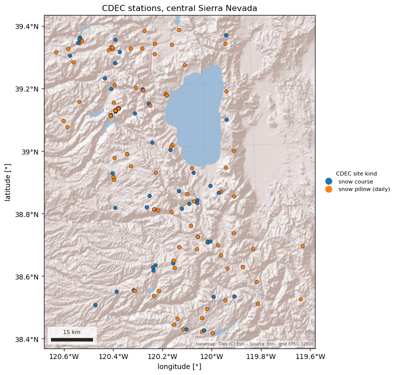
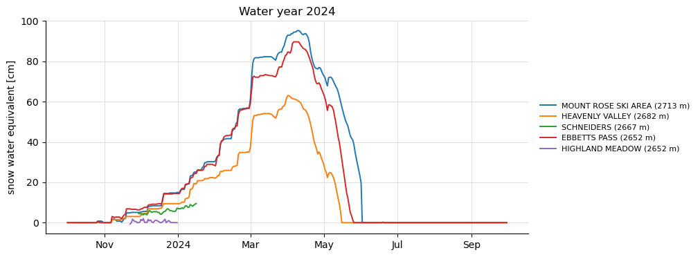
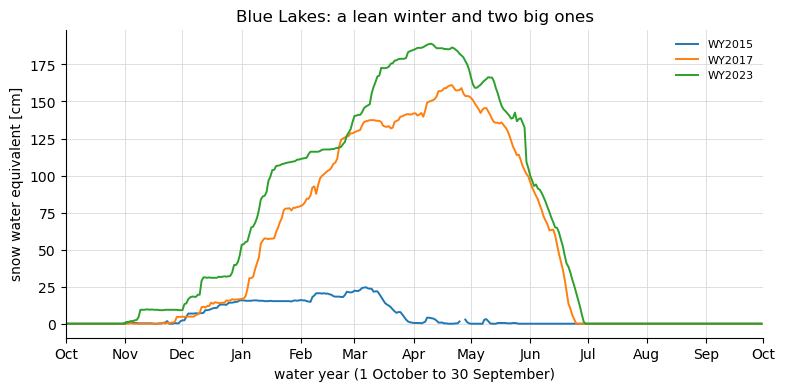

Note
Go to the end to download the full example code.
California snow pillows and courses (CDEC)#
The California Data Exchange Center serves the California Cooperative Snow
Surveys: automated snow pillows that report SWE, snow depth, precipitation and
temperature daily (hourly at many), and manual snow courses surveyed around
the first of the month through winter and spring. Both are in the inventory. Only
the pillows have a daily record, so daily_only keeps the pillows.
There is one route, source="cdec": CDEC’s JSON data servlet for the
values and its station pages for the metadata. No account is needed. Station
codes are CDEC’s three letters (BLK), the same in the global code.
The figures show the stations of the central Sierra Nevada coloured by kind, one water year of SWE at the highest pillows in the box, and three contrasting water years at one pillow on a single October-to-September axis.
import easysnowdata as esd
aoi = (-120.6, 38.4, -119.6, 39.4)
box = esd.parse_aoi(aoi)
print(box, box.utm_crs) # the map below is drawn in the AOI's UTM zone
AOI(bounds=(-120.6000, 38.4000, -119.6000, 39.4000), clip=True) EPSG:32610
Where the product comes from.
for src in esd.catalog.get("cdec-stations").sources:
print(f"{src.id:20} {src.title:45} {', '.join(src.requires) or 'no account'}")
cdec California Data Exchange Center no account
Everything CDEC has in the box, and the pillows among them. The archive
inventory’s daily_or_better is the pipeline’s verdict after actually
retrieving daily values, not what CDEC’s sensor list advertises.
everything_gdf = esd.stations.inventory(aoi, networks="cdec")
everything_gdf["kind"] = everything_gdf["daily_or_better"].map(
{True: "snow pillow (daily)", False: "snow course"}
)
print(everything_gdf["kind"].value_counts().to_string())
kind
snow pillow (daily) 108
snow course 43
Pillows and courses share the same basins; the courses are the older network and many pillows were installed beside an existing course.
ax = esd.plotting.points(
everything_gdf.to_crs(box.utm_crs),
column="kind",
legend_label="CDEC site kind",
title="CDEC stations, central Sierra Nevada",
)

One water year of SWE at the five highest pillows. CDEC carries two SWE
sensors, the raw pillow (3) and the adjusted one (82); the client prefers
the adjusted sensor and records what it used in native_variables.
daily_gdf = everything_gdf[everything_gdf["daily_or_better"].fillna(False).astype(bool)]
highest_gdf = daily_gdf.nlargest(5, "elevation_m")
obs_ds = esd.stations.load(highest_gdf, variables="swe", time="2023-10/2024-09")
print("native CDEC sensors behind `swe`:", obs_ds["swe"].attrs["native_variables"])
ax = esd.plotting.timeseries(obs_ds["swe"], title="Water year 2024")

native CDEC sensors behind `swe`: SNO ADJ
Two of the five stop reporting in January. “Daily-verified” means the probe retrieved daily values from the station, not that its record is gapless; count the observations before trusting a seasonal statistic.
print(obs_ds["swe"].count(dim="time").to_series().to_string())
station
MSK 365
HVN 366
SCN 49
EBB 366
HHM 40
Blue Lakes (2435 m) has reported since 1980. Three water years side by side: 2015, the record-low snowpack; 2017 and 2023, two of the largest on record.
blue_lakes_ds = esd.stations.load("BLK", variables="swe", time="2014-10/2023-09")
swe_da = blue_lakes_ds["swe"]
picked_da = swe_da.where(swe_da["water_year"].isin([2015, 2017, 2023]), drop=True)
ax = esd.plotting.timeseries(
picked_da,
by_water_year=True,
title=f"{str(swe_da['name'].values[0]).title()}: a lean winter and two big ones",
)

In the lean year SWE never passed 25 cm and the pillow was bare by early April. The big years did not just pile up more: their peaks came a month later, in late April and May, and melt ran into July.
peak_da = swe_da.groupby("water_year").max()
print(peak_da.to_series().round(0).to_string())
station water_year
BLK 2015 25.0
2016 86.0
2017 161.0
2018 52.0
2019 138.0
2020 71.0
2021 55.0
2022 49.0
2023 189.0